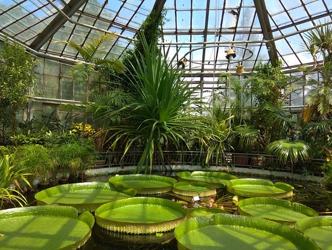
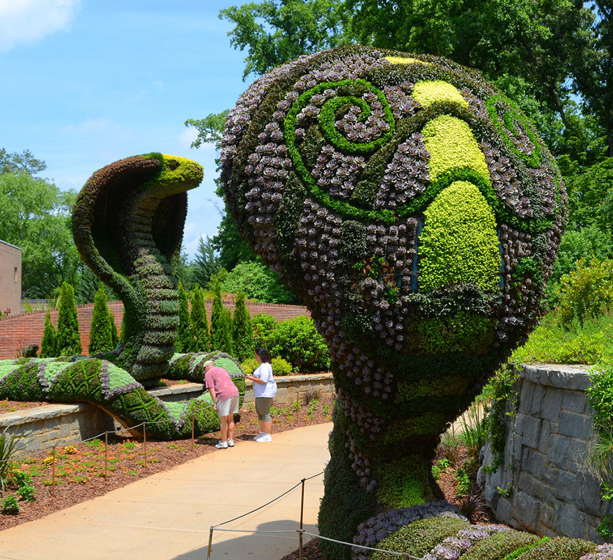

History
The Botanical Garden of Bucharest was established as an institution in 1860, in addition to the Faculty of Medicine and Pharmacy, by Dr. Carol Davila. The founding decree was signed by Prince Alexandru Ioan Cuza on November 5. At that time, the Botanical Garden occupied a relatively small area (7 ha) and was located on the left side of Cotroceni Road. The adequate arrangement of this space, as a didactic and research base, was carried out under the leadership of the skilled botanist Ulrich Hoffmann, as the first director of this institution.
|  |
Starting with 1866, the management of the Botanical Garden was taken over by Professor Dr. Dimitrie Grecescu, a prominent figure in Romanian botany, who contributed substantially to its further development, both by enriching the collections and stimulating exchange relations with botanical gardens in other European countries. as well as by publishing the first catalog of existing plants in the outdoor sectors and in the garden greenhouses. |
|
In 1874 the Botanical Garden was moved from the old location in the city center, on the grounds of the Vasile Şuţu Palace located in front of the University. In the same year, the institution became part of the University of Bucharest, operating under the Faculty of Sciences and headed by the remarkable professor Dr. Dimitrie Brandza. Improper conditions for the development of a botanical garden determined the great botanist to take many steps to obtain a suitable land for the redevelopment of this institution, in accordance with the mission he had to fulfill. In 1884 his actions were crowned with success, being allocated based on decree no. 659 of February 28 the necessary land and funds. |
 |